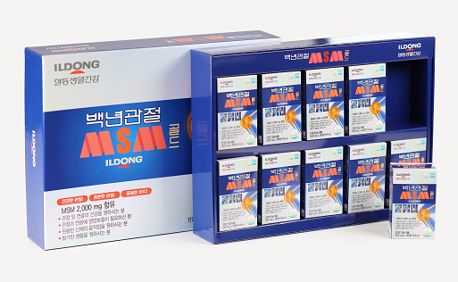

<!DOCTYPE html>
<html lang="ko">
  <head>
    <meta charset="UTF-8" />
    <meta name="viewport" content="width=device-width, initial-scale=1.0" />
    <title>Big Five Personality Test 결과</title>
    <link rel="stylesheet" href="style.css" />
    <script src="https://cdn.jsdelivr.net/npm/chart.js"></script>
    <link rel="preconnect" href="https://fonts.googleapis.com">
    <link rel="preconnect" href="https://fonts.gstatic.com" crossorigin>
    <link href="https://fonts.googleapis.com/css2?family=Roboto:wght@400;700&display=swap" rel="stylesheet">
    <style>
      canvas#bigFiveChart {
        width: 60%;
        height: 30%;
        display: block;
        margin: 0 auto;
      }
      .result-table,
      .personality-table {
        border-collapse: collapse;
        margin: 0 auto;
        width: 80%;
      }

      .result-table td,
      .personality-table td {
        border: 1px solid #999;
        padding: 8px;
      }

      .result-table tr:nth-child(even),
      .personality-table tr:nth-child(even) {
        background-color: #f2f2f2;
      }
  
      .Agendabook-ad1 {
         width: 100%;
         height: 30%;
         text-align: center;
        }

    </style>
  </head>
  <body>
    <div id="result">
    </div>
    <script>
      function getQueryParams() {
        const queryString = window.location.search;
        const urlParams = new URLSearchParams(queryString);
        return {
          openness: parseFloat(urlParams.get("openness")),
          conscientiousness: parseFloat(urlParams.get("conscientiousness")),
          extraversion: parseFloat(urlParams.get("extraversion")),
          agreeableness: parseFloat(urlParams.get("agreeableness")),
          neuroticism: parseFloat(urlParams.get("neuroticism")),
        };
      }

      function createChart() {
        const ctx = document.getElementById("bigFiveChart").getContext("2d");
        const scores = getQueryParams();
        const labels = [
          "개방성(Openness)",
          "성실성(Conscientiousness)",
          "외향성(Extraversion)",
          "우호성(Agreeableness)",
          "신경성(Neuroticism)",
        ];
        const colors = [
          "rgba(255, 99, 132, 0.2)", // 빨간색
          "rgba(75, 192, 192, 0.2)", // 녹색
          "rgba(54, 162, 235, 0.2)", // 파란색
          "rgba(255, 206, 86, 0.2)", // 노란색
          "rgba(153, 102, 255, 0.2)", // 보라색
        ];
         const borderColors = [
          "rgba(255, 99, 132, 1)", // 빨간색
          "rgba(75, 192, 192, 1)", // 녹색
          "rgba(54, 162, 235, 1)", // 파란색
          "rgba(255, 206, 86, 1)", // 노란색
          "rgba(153, 102, 255, 1)", // 보라색
        ];
      
        const datasets = labels.map((label, i) => ({
          label,
          data: [scores.openness, scores.conscientiousness, scores.extraversion, scores.agreeableness, scores.neuroticism].map((score, j) => (i === j ? score : 0)),
          backgroundColor: colors[i],
          borderColor: borderColors[i],
          borderWidth: 2,
          stack: 1,
        }));

        const data = {
          labels,
          datasets,
        };

        const chart = new Chart(ctx, {
          type: "bar",
          data: data,
          options: {
            scales: {
              y: {
                beginAtZero: true,
                max: 50,
                ticks: {
                  stepSize: 10,
                },
              },
            },
            plugins: {
              legend: {
                labels: {
                  font: {
                    size: 13,
                    family: "Roboto",
                  },
                },
              },
            },
            aspectRatio: 1,
            elements: {
              bar: {
                borderWidth: 3,
              },
            },
          },
        });
      }


      function getDetailedDescription(score, lowDesc, midDesc, highDesc) {
        if (score <= 16) {
            return `★ : ${score}점<br>${lowDesc}`;
        } else if (score >= 17 && score <= 33) {
            return `★★ : ${score}점<br>${midDesc}`;
        } else {
            return `★★★ : ${score}점<br>${highDesc}`;
        }
    }
      
      function showResults() {
        const scores = getQueryParams();
      
        const extraversionDesc = getDetailedDescription(
          scores.extraversion,
          "<br>외향성이 낮은 편으로, 사교적인 환경보다는 독립적으로 일하고 혼자 있는 것을 선호합니다. <br>친밀감과 사교성이 낮아 대인관계에서 덜 활발하며, 리더쉽 역할을 맡는 것보다는 <br>개인적인 역량을 활용해 일하는 것을 좋아합니다. 활동성이 상대적으로 낮아서 적극적인 활동보다는 <br>여유로운 시간을 선호하며, 흥미추구가 보수적인 경향이 있습니다. 명랑함이 낮아 감정 표현이 내향적이며,<br> 과도한 활력을 발산하지 않습니다.",
          "<br>외향성이 중간 수준이라서 때때로 사교적인 환경에서 기쁨을 느낍니다. 하지만 혼자 있는 것도 꽤 편안합니다.<br>하지만 혼자 있는 것도 꽤 편안합니다. 친밀감과 사교성이 어느 정도 발달되어 있어,<br>대인관계에서 적절한 수준의 활발함을 보여줍니다. 리더쉽과 개인적 역량 사이에서 균형을<br> 이루려고 노력하며, 활동성과 여유로운 시간 사이에서 적절한 균형을 찾습니다.<br> 흥미추구가 다양한 취향을 가지고 있어 새로운 경험을 즐기며, 명랑함이 적절한 수준으로 긍정적인 감정을 표현합니다.",
          "<br>외향성이 높은 편으로, 사교적인 환경에서 활발하게 활동하며, 다른 사람들과 함께하는 것을 즐깁니다.<br> 친밀감과 사교성이 높아 대인관계에서 매우 활발하며, 리더쉽 역할을 자주 맡아 리드하는 것을 좋아합니다. <br> 활동성이 높아 적극적인 활동과 모험을 즐기며, 흥미추구가 강한 경향이 있어 새로운 경험과 도전을 즐깁니다. <br> 명랑함이 높아 긍정적인 감정을 표현하며, 에너지가 넘치는 모습을 보여줍니다."
        );
      
        const agreeablenessDesc = getDetailedDescription(
          scores.agreeableness,
          "<br>우호성이 낮은 편으로, 남들과의 협력보다는 자신의 이익을 중시합니다. 때때로 충돌이 일어날 수 있습니다.<br>신뢰를 쉽게 주지 않으며, 강직한 태도를 보여주기 쉽습니다. 이타주의보다는 이기주의적인 경향이 있어, <br> 자신의 이익을 우선시하는 경우가 많습니다. 협조성이 낮아 다른 사람들과의 협력보다는 독립적으로 일하는 것을 <br> 선호하며, 겸손함이 부족해 남들의 의견을 존중하기 어렵고, <br> 공감력이 낮아 다른 사람들의 감정에 공감하는 것이 어려울 수 있습니다. <br>",
          "<br>우호성이 중간 수준이라서 상황에 따라 다른 사람들과 협력하거나 자신의 이익을 중시합니다. <br>신뢰를 주는 데에 시간이 필요하며, 상황에 따라 강직함과 유연함 사이에서 균형을 찾습니다. <br> 이타주의와 이기주의 사이에서 타협을 이루려고 노력하며, 협조성을 보여줄 때도 있지만 때로는 <br> 독립적으로 일하는 것을 선호합니다. 겸손함이 적절한 수준이며, 다른 사람들의 의견을 고려하는 것에 익숙합니다.<br>공감력도 상황에 따라 다르게 나타나며, 필요한 경우에 다른 사람들의 감정에 공감할 수 있습니다.",
          "<br>우호성이 높은 편으로, 다른 사람들과 잘 협력하고 이해관계를 공유하는 것을 선호합니다.<br> 신뢰를 쉽게 주며, 강직함보다는 유연한 태도를 보여줍니다. 이타주의적인 경향이 있어 <br> 다른 사람들의 이익을 우선시하며, 협조성이 높아 남들과 함께 일하는 것을 선호합니다. <br> 겸손함이 높아 다른 사람들의 의견을 존중하며, 공감력이 높아 <br> 다른 사람들의 감정에 잘 공감하고 이해할 수 있습니다."
        );
      
        const conscientiousnessDesc = getDetailedDescription(
          scores.conscientiousness,
          "<br>성실성이 낮은 편으로, 조직적이지 않고 계획을 세우는 것이 어렵습니다.<br>자신감이 부족해 일에 대한 확신이 부족할 수 있으며, 계획성이 낮아 일정이나,<br>목표 달성에 어려움을 겪을 수 있습니다. 책임감이 낮아 일의 성과에 대해 적극적으로 <br>대처하지 않을 수 있으며, 성취욕이 부족해 동기부여가 어려울 수 있습니다. <br>자제력이 낮아 충동적인 행동이나 선택이 빈번할 수 있으며, 신중함이 부족해 판단이나 <br>결정을 서두를 수 있습니다.",
          "<br>성실성이 중간 수준이라서 때때로 계획을 세우고 조직적으로 일합니다.<br>자신감이 상황에 따라 변할 수 있으며, 계획성이 적절한 수준이어서<br> 일정이나 목표 달성에 어느 정도 성공합니다. 책임감이 일부 상황에서 나타나며, <br>성취욕이 적절한 수준이어서 동기부여에 어느 정도 성공합니다.<br> 자제력이 때때로 나타나 충동적인 행동이나 선택을 피할 수 있으며,<br> 신중함이 적절한 수준이어서 판단이나 결정을 잘 생각해 내릴 수 있습니다.",
          "<br>성실성이 높은 편으로, 계획을 세우고 조직적으로 일하는 것을 선호합니다.<br>자신감이 높아 일에 대한 확신이 강하며, 계획성이 높아 일정이나 목표 달성에 성공적입니다. <br>책임감이 높아 일의 성과에 대해 적극적으로 대처하며, 성취욕이 높아 동기부여가 효과적입니다.<br>자제력이 높아 충동적인 행동이나 선택을 잘 피하며, 신중함이 높아 판단이나 결정을 <br>철저히 생각한 후 내릴 수 있습니다."
        );
      
      
        const neuroticismDesc = getDetailedDescription(
          scores.neuroticism,
          "<br>신경성이 낮은 편으로, 정서적으로 안정되어 있으며 스트레스에 잘 대처합니다.<br>이러한 사람들은 일상 스트레스에 대한 걱정이 적고, 분노와 우울을 잘 조절할 수 있습니다. <br>자의식이 낮아 자신감이 높으며, 충동성을 잘 통제하고 심약함이 적은 편입니다.",
          "<br>신경성이 중간 수준이라서 스트레스 상황에서 다양한 정서적 반응을 보입니다. <br>일부 상황에서는 스트레스에 잘 대처하며 다른 상황에서는 덜 안정적일 수 있습니다. <br>걱정, 분노, 우울 등의 감정은 상황에 따라 다르게 나타날 수 있으며, <br>자의식과 충동성, 심약함 역시 중간 정도입니다.",
          "<br>신경성이 높은 편으로, 스트레스에 대한 감정적 반응이 높으며, 상황을 위협적으로 인식할 가능성이 높습니다.<br>이러한 사람들은 걱정이 많고, 분노와 우울을 느끼기 쉽습니다. <br>자의식이 높아 자존감이 낮을 수 있으며, 충동성이 강하고 심약함을 느끼기 쉽습니다."
        );

        const opennessDesc = getDetailedDescription(
          scores.openness,
          "<br>개방성이 낮은 편으로, 현실적이고 구체적인 사고를 선호하며, 변화에 대한 저항감이 있을 수 있습니다.<br>이러한 사람들은 상상력이 적고 예술적 감수성이 낮으며, 감정을 존중하기보다는 사<br>실에 기반한 판단을 중시합니다. 모험성이 낮아 안정을 추구하며, <br>지적 호기심이 적고 가치관이 진보적이지 않을 수 있습니다.",
          "<br>개방성이 중간 수준이라서 새로운 경험과 아이디어에 대한 호기심을 갖고 있지만, 때때로 현실적이고 구체적인 사고를 선호합니다.<br>이러한 사람들은 상상력과 예술적 감수성이 어느 정도 있으며, <br>감정 존중과 사실 기반 판단 사이에서 균형을 유지합니다. <br>모험성과 지적 호기심이 있지만, 때로는 안정을 추구하기도 합니다. 가치관은 진보적일 수도 보수적일 수도 있습니다.",
          "<br>개방성이 높은 편으로, 새로운 경험과 지식에 대한 호기심이 많으며 창의적이고 유연한 사고를 갖고 있습니다.<br>이러한 사람들은 상상력이 풍부하고 예술적 감수성이 높으며, 감정을 존중하고 이해합니다. <br>모험성이 높아 새로운 경험을 즐기며, 지적 호기심이 많아 다양한 분야에 관심을 가집니다. <br>가치관이 진보적이며, 다양한 문화와 사상에 대해 개방적인 태도를 보입니다."
        );

        document.getElementById("result").innerHTML = `
        <h1 style="text-align: center;">Big 5 성격검사</h1>
        <p style="text-align: center;">각 성격 유형의 점수는 0-50 point 사이입니다. 점수가 높을수록 성격 유형이 강합니다.</p>
        <canvas id="bigFiveChart" width="300" height="300"></canvas>
        <h2 style="text-align: center;">종합 측정 결과</h2>
   <!--
        <p style="text-align: center;">
          <table class="result-table">
            <tr>
              <td>개방성(Openness):</td>
              <td>${scores.openness}</td>
            </tr>
            <tr>
              <td>성실성(Conscientiousness):</td>
              <td>${scores.conscientiousness}</td>
            </tr>
            <tr>
              <td>외향성(Extraversion):</td>
              <td>${scores.extraversion}</td>
            </tr>
            <tr>
              <td>우호성(Agreeableness):</td>
              <td>${scores.agreeableness}</td>
            </tr>
            <tr>
              <td>신경성(Neuroticism):</td>
              <td>${scores.neuroticism}</td>
            </tr>
          </table>
        </p>
    -->
      <table class="personality-table" style="margin: 0 auto;">
        <tr>
          <td><h3>외향성(Extroversion)</h3></td>
          <td><br>${extraversionDesc}<br></td>
        </tr>
        <tr>
          <td><h3>우호성(Agreeableness)</h3></td>
          <td><br>${agreeablenessDesc}<br></td>
        </tr>
        <tr>
          <td><h3>성실성(Conscientiousness)</h3></td>
          <td><br>${conscientiousnessDesc}<br></td>
        </tr>
        <tr>
          <td><h3>신경성(Neuroticism)</h3></td>
          <td><br>${neuroticismDesc}<br></td>
        </tr>
        <tr>
          <td><h3>개방성(Openness)</h3></td>
          <td><br>${opennessDesc}<br></td>
        </tr>
      </table>
      <!-- 여기에 SNS 공유 버튼 코드를 추가하세요. -->
      <!-- 여기에 회사 로고를 추가하세요. -->
      <div class="app-links">
        <a href="https://play.google.com/store/apps/details?id=com.agendabook.agendabook" class="app-link" target="_blank" rel="noopener noreferrer">
          
        </a>
        <a href="https://apps.apple.com/kr/app/agendabook/id1614980820" class="app-link" target="_blank" rel="noopener noreferrer">
          
        </a>
      </div>
      <!-- Agendabook ad -->
             <div class="Agendabook-ad1 mt-5">
                <a href="https://smartstore.naver.com/agenmall" target="_blank">
                    
                </a>
            </div>
            <!-- End of Agendabook ad -->
      `;
      
      createChart(); // 차트를 생성하는 함수 호출
    }

    showResults();
    
  </script>
</body>
</html>